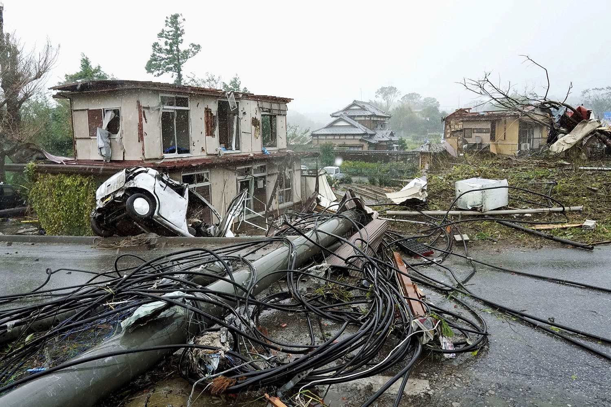
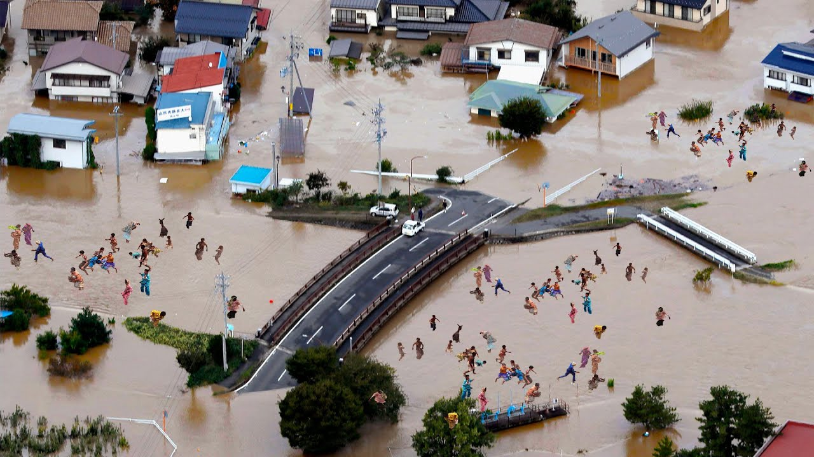

На японский остров Кюсю обрушился тайфун «Шаньшань». Синоптики называют его одним из самых сильных за последнее десятилетие. Скорость ветра достигает 200 км/ч, из-за ливней из берегов выходят реки. Ожидается, что в выходные тайфун дойдет до Токио.

Вызванные тайфуном оползни и разрешения привели к гибели по меньшей мере четырех человек, около ста получили ранения
В некоторых районах острова Кюсю было объявлено чрезвычайное предупреждение высшего, 5-го уровня. Скорость ветра достигает 200 км/ч
Шторм оставил без электричества более 100 тыс. домохозяйств.

Из-за сильных ливней из берегов выходят реки.